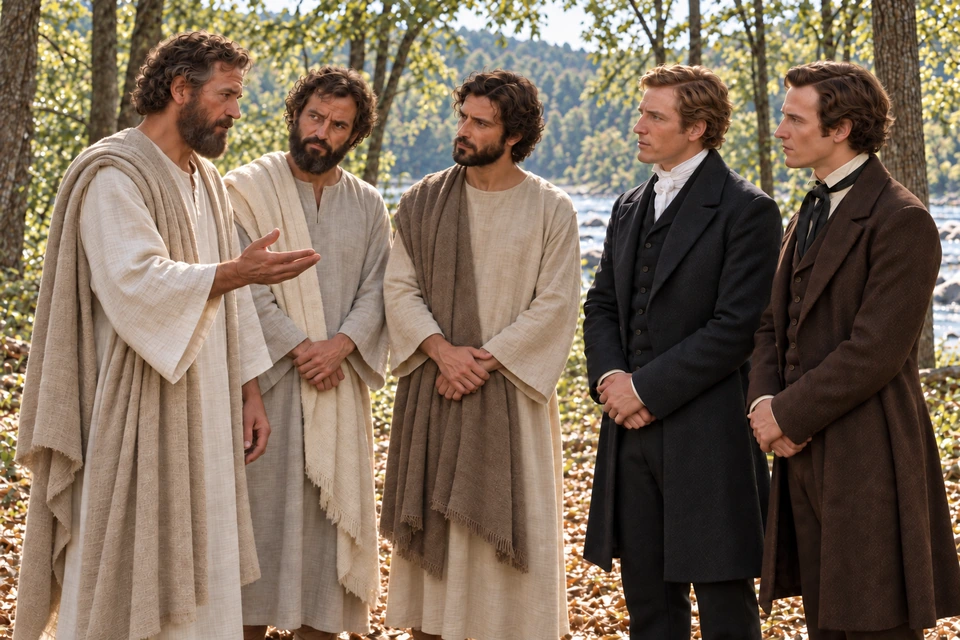
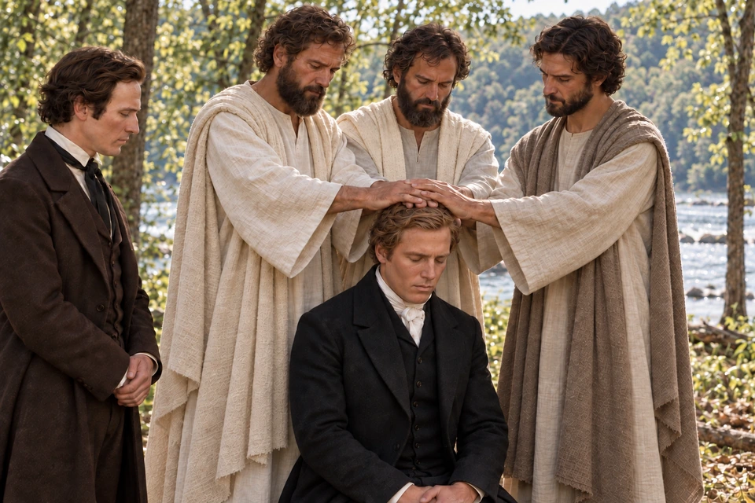
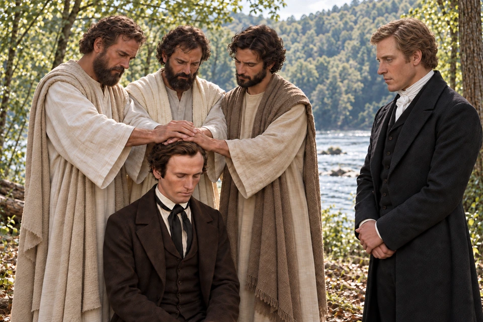
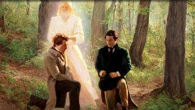

{kind=link}
{kind=link}

The Lord in His house
Joseph and Oliver testify of seeing the Savior in the Kirtland Temple. Read their witness of Him.
Doctrine and Covenants 110:1–10
Open this illustrated study →Study Jesus Christ · Priesthood restoration
Authority received, understanding unfolded, people served
ContinueStudy the testimony of Peter, James, and John’s ministry to Joseph Smith and Oliver Cowdery. Follow the surviving scriptural and historical witnesses, keep the unanswered questions visible, and consider the Lord’s teaching about how priesthood authority should be exercised.
Doctrine and Covenants 27:12–13 names Peter, James, and John and connects their ministry with apostolic authority and keys. Doctrine and Covenants 128:20 remembers their voices in the wilderness between Harmony and Colesville, along the Susquehanna River.
Begin with those witnesses and the questions they actually answer. The opening artwork shows an imagined contemporary priesthood blessing. The historical account below traces a different moment: the restoration of authority through Peter, James, and John. The surviving sources do not establish a precise date for the conferral.
Explore and study
Books and notes rest together on a quiet desk in this imagined study scene. Take time with the witnesses: notice when each account was written, whose words it preserves, and what it helps you understand.

Explore and study
Beside the river, Joseph and Oliver receive a solemn charge. Their later accounts remember Peter, James, and John as heavenly messengers. Read those accounts alongside the Lord’s teaching about gentle influence: authority in His name calls for persuasion, patience, and love.
Read Doctrine and Covenants 27:12–13 Read Doctrine and Covenants 121:41–42
Joseph Smith and Oliver Cowdery testified that Peter, James, and John conferred greater priesthood authority upon them. The Church's historical account explains that surviving sources do not establish the exact date. Estimates differ, and the restoration should not be assigned a precise day simply to complete a timeline. Many detailed accounts were written later; earlier references are less specific. Study the evidence and the dating question.

Explore and study
Joseph bows his head as Peter, James, and John place their hands upon him. The scene invites a closer look at the testimony that these messengers conferred priesthood authority in Jesus Christ’s name.

Explore and study
Oliver kneels beneath the three apostles’ hands while Joseph stands nearby. Oliver’s later accounts remember receiving greater priesthood authority. The paired pictures show each man receiving; they do not establish who came first.
The three apostles participate in each artistic scene. Their faces, hand placement, and the order pictured are interpretations; the accounts do not describe that arrangement.
Joseph's 1842 letter, now Doctrine and Covenants 128:20, places their voices in the wilderness between Harmony and Colesville, along the Susquehanna. Doctrine and Covenants 27:12–13 connects these messengers with apostolic authority and the keys of ministry. These passages preserve the central claim without providing a complete scene description.
Understanding also developed over time. The Church's account follows later revelations that clarified priesthood offices and terminology, and subsequent restoration of keys and temple ordinances. It presents the restoration as a sequence of events rather than a single moment containing every later organizational detail. Keeping these developments in view helps us read early records in their own setting.
Joseph and Oliver testify of seeing the Savior in the Kirtland Temple. Read their witness of Him.
Doctrine and Covenants 110:1–10
Open this illustrated study →Read Doctrine and Covenants 121:41–42 alongside this history. How should patience, gentleness, and sincere love shape the use of authority? The invitation is to serve people, not merely admire an office. Continue with careful source study or return to the artwork gallery.
Read Doctrine and Covenants 107:1–8 for the later explanation of the two priesthoods, the name associated with Melchizedek, and the presiding and spiritual responsibilities described there. Then return to the earlier historical account. A later explanation can clarify a teaching without proving that every term or organizational detail was already expressed in the same way in the earliest accounts.
Doctrine and Covenants 84:19–22 connects priesthood ordinances with the power of godliness and coming to know God. Study these verses within the revelation’s wider treatment of priesthood and covenant rather than treating authority as a personal distinction.

Careful hands prepare the sacrament table. Consider how ordinances turn our attention toward Jesus Christ.
Doctrine and Covenants 20:75–79
Open this illustrated study →Keep a short record of what each source contributes: the testimony of the messengers, the named place, the later explanation of offices, and the spiritual purpose of ordinances. Leave an unanswered date as unanswered.
Church video
President Dallin H. Oaks explains priesthood authority and keys in the Church and at home. Listen for how authority serves God’s children and how its blessings reach women and men.
The Church of Jesus Christ of Latter-day Saints
Doctrine and Covenants 121:34–46 places the exercise of priesthood within a demanding moral teaching. Persuasion, long-suffering, gentleness, meekness, love unfeigned, kindness, and pure knowledge are part of the passage’s language. Read its warnings as well as its promises.
These verses do not excuse pressure or mistreatment in the name of authority. They invite examination of how people are actually treated. In daily relationships, listening patiently and serving without seeking control are useful places to begin reflecting on the passage.
Explore and study
Two men sit together in a garden, one speaking while the other listens. This imagined moment invites us to consider how patience and gentleness can shape the way we serve someone.

Church video
Matthew C. Godfrey and Spencer McBride discuss how Church leaders’ understanding of priesthood developed after authority was restored. Follow their account of changes in organization and duties.
The Church of Jesus Christ of Latter-day Saints
These questions are optional invitations for personal study. Take time with one before moving to the next.
Which details do the scriptural and historical sources establish? Which details in the pictures are an artist’s interpretation? Keep both lists so a familiar picture does not become your evidence.
Compare the earlier witness with a later explanation of priesthood. What becomes clearer? What should you avoid projecting backward into the earlier account?

An adult listens beside open scriptures. Bring your own questions to the Savior’s words.
Open this illustrated study →Choose one quality named in the passage on gentle influence. What would it change in a conversation where you are tempted to insist, hurry, or control?
Continue with the Church’s historical account and its documentary notes. Notice the dates of the records and follow the linked sources when a detail raises a question.
Read the related testimony while keeping the distinct accounts and responsibilities in view.
Connect priesthood, scripture, ordinances, and the purpose of the Church.
Explore the wider history and its original sources.